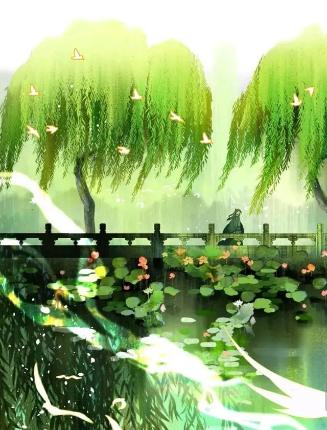

王维是盛唐时期著名诗人，他出生名门，年少成名，历经了玄宗、肃宗、代宗三朝，担任了右拾遗、监察御史、左补阙、库部郎中、吏部郎中、给事中、太子中庶子、中书舍人的职位，晚年官至尚书右丞，所以后人经常称他为王右丞。
但王维在数十年沉沉浮浮的官场生涯中，特别是安史之乱时他还被迫担任过安禄山的伪官，所以他的内心也是矛盾不已。
安史之乱后，王维显然对官场失去了兴趣，他想寻找真正属于他的生活，寻找一方能安放自己心灵的归宿。于是，王维在终南山营造了一处建筑——辋川别墅。
自从有了这座别墅，王维有事上朝，无事还家，体验了一把半官半隐、诗和远方让人羡慕的佛系生活，这种生活，在他的诗歌中得到了鲜明的体现。
再加上王维虔诚信佛，这种生活让他对佛禅有了更深的感悟和体会，使得王维晚年的诗歌中，往往存在着禅理，值得认真玩味。
今天我介绍的是他的作品《终南别业》。这首诗就是王维晚年最著名的作品之一，它处处有韵味，句句充满着淡泊宁静的隐士情怀，可以说非常形象地体现了他诗歌中的禅性的特点，也是他晚年生活的真实写照。
终南别业
唐·王维
中岁颇好道，晚家南山陲。
兴来每独往，胜事空自知。
行到水穷处，坐看云起时。
偶然值林叟，谈笑无还期。
“中岁颇好道，晚家南山陲”，诗歌的首联说自己中年的时候喜欢上佛教，于是就在终南山脚下安置了一个家，也就是说，终南别业是供自己参悟禅理的一个场所。
“道”是大道，这里并非道家，而是指佛理和禅学方面。所以，这首诗的开篇句，也可以说是诗人对自己参禅悟道的一个自述。
“兴来每独往，胜事空自知”，一旦兴致上来，诗人便独自一人去山中游览，对辋川的自然风光，作者心有所得，怡然自乐。
诗歌的颔联也是千古名句，是描写诗人日常生活中的悟禅过程，享受孤独是参悟的必要条件，独行独往得到心灵自由的这种美好的感觉，自己能够品到，就说明有一定境界了。

“行到水穷处，坐看云起时”颈联更是颇具禅性哲理的千古佳句，讲的是诗人在独来独往中参悟的一个禅理，值得我们用心去品味。
我们通过王维的笔下，可以得知他是没有目的，没有方向，一任心之所向的随意而走，在不知不觉间，他已经无路可走了，因为已经到了流水的尽头。
无路可走的时候，王维没有心浮气躁、没有气急败坏，他反而随地而坐，赏山间花卷花卷，看天上云起云落，去看大自然中一刹那间的纷纭动象。
这一句不同的人，感悟有所不同。
只要是人就难免在生活遇到人生困境，但每个人到山穷水尽地步的做法都不一样，有人崩溃的哭和闹，有人不哭不闹发现另一种美，而王维“行到水穷处”时，他的做法是“坐看云起时”。
所以，当你感到生活无望的时候，不要失望，不要放弃，想想王维这两句诗，或许心情就会舒畅很多。
另外王维这一行一坐并没有描绘具体的山川景色，但犹如一幅天然的山水图呈现在读者面前。
天上自由飘动的白云，是那样的自然舒缓，是那样的行云流水，这也表达了作者在山水之间自由的生活。
他用自然界的事物将禅理与人生感悟书写了出来，这或许也是诗人在山水间参禅悟道的一种身体力行吧。
既然已经参禅悟道，心灵自然能够得到解脱，活得一身轻松。
所以尾联“偶然值林叟，谈笑无还期”两句就很好理解了。
信步而行的诗人碰到一位山间老人，因为心情舒适，两人自然能够谈笑无尽，流连于山水之中，不愿离去了。
“无还期”，表面是写王维由于攀谈忘记了回家，实际上也是借此写诗人真正达到了物我两忘的境界。
什么荣华富贵，王侯将相在此刻他眼里皆是风轻云淡般的存在，王维在晚年找到了人生最好的活法。
另外这一句也颇有玩味，前面说行到水穷处，这时却能够在此处碰到林叟，这是不是有种顿悟后领略到人生美好和真谛的感觉。
全诗王维用字用语都很简单平实，却意蕴深刻，使得全诗在洋溢着隐居山间的恬适情趣的同时，渗透了诗人对于人生的理解，引人深思，这对于我们这些普通的读者来说，只要能够真正地理解其中的意思，那么一定也是会有收获。我的演讲完毕，谢谢。
图片来源网络
附件：
终南别业PPT（附讲稿）
> COMMENTS (0)